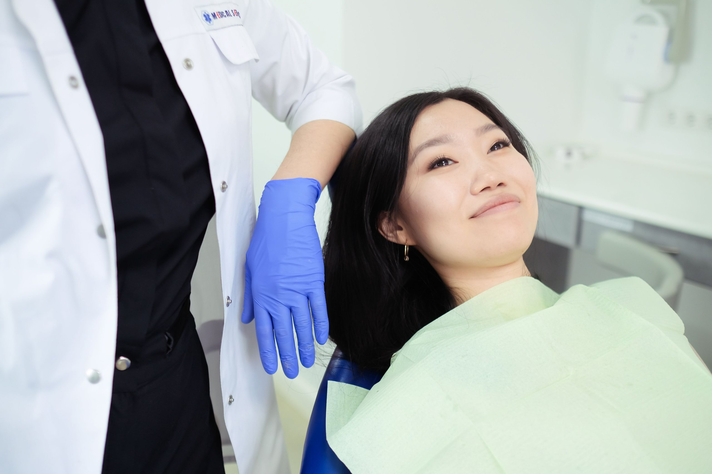
広島市中区・並木通りの矯正歯科
費用も期間も、
初診でお伝えします
当院は大人の矯正治療を中心に行っています。60分の初診相談で、治療方法ごとの総額と期間を書面にしてお渡しします。
- 初診相談3,300円（税込）
- 月・火・水・金は19時まで診療
- 土曜も診療
NEWSお知らせ
- 休診
9月14日（月）は休診します。
- 設備
口腔内スキャナーを導入しました。精密検査で行う歯列のスキャンに、この機器を使います。
- 休診
8月13日（木）から8月16日（日）まで休診します。
- 診療
平日の夕方にも初診相談の枠を設けました。
診療時間のご案内
| 診療時間 | 月 | 火 | 水 | 木 | 金 | 土 | 日 |
|---|---|---|---|---|---|---|---|
| 10:00〜13:00 | ● | ● | ● | ― | ● | ● | ― |
| 14:30〜19:00 | ● | ● | ● | ― | ● | 〜17:00 | ― |
最終受付は診療終了の30分前（初診相談は1時間前）です。
お電話082-000-0000
広島電鉄・袋町電停から徒歩6分
WORRY矯正治療のお悩みとご質問
費用や期間、装置の見え方など、気になっていることは初診相談でお聞かせください。
FEATURES当院の4つの特徴
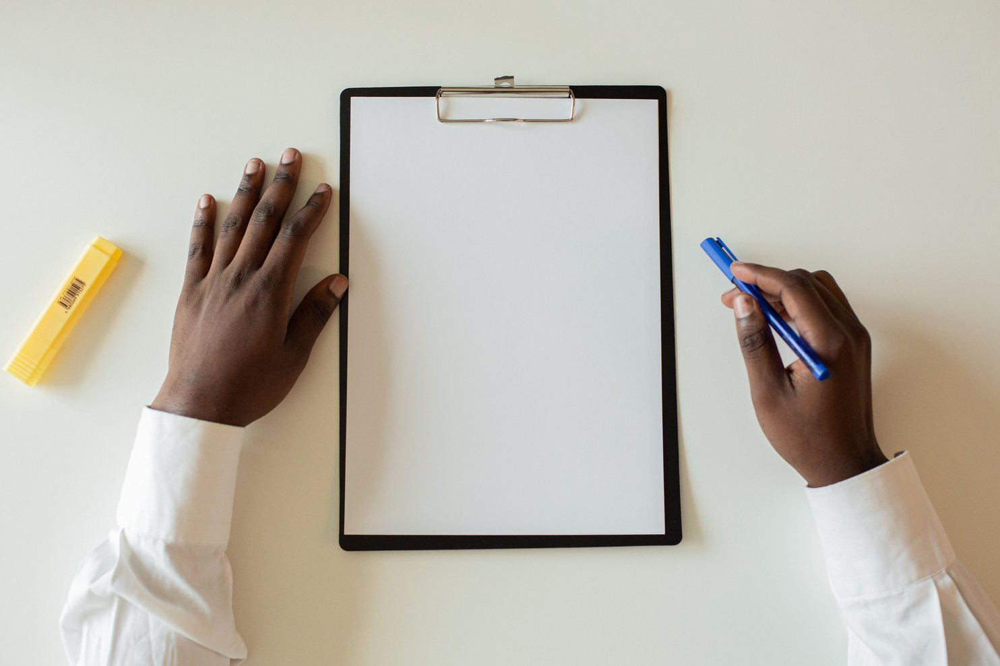
総額と
治療期間のご提示
装置代、調整料、装置を外したあとの保定にかかる費用まで含めた総額をお伝えします。書面には、ご相談の内容から考えられる治療方法ごとの総額と、治療期間・通院回数の目安を記載します。
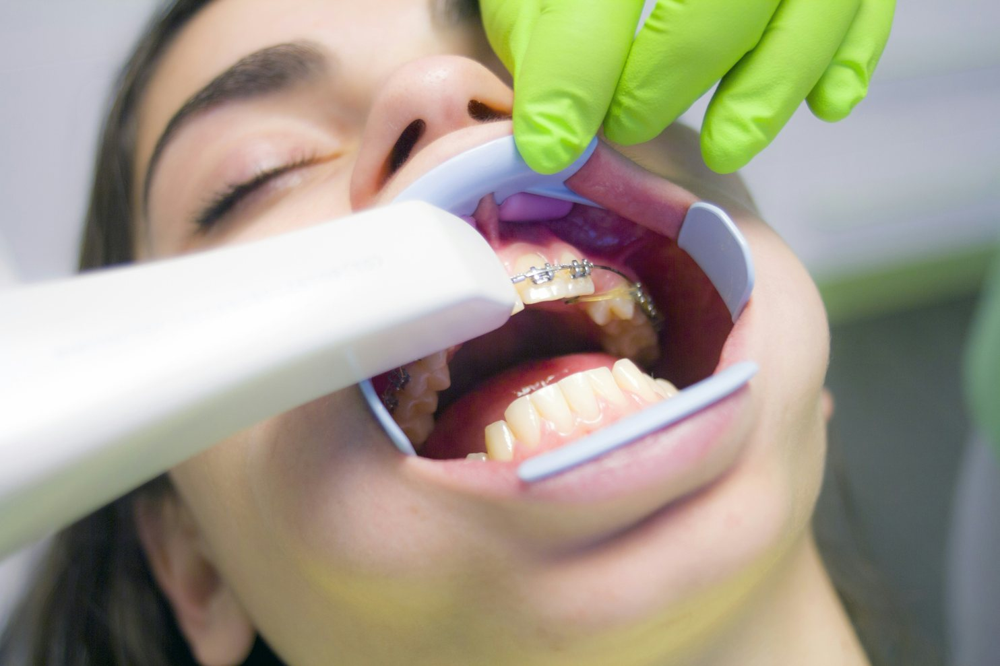
精密検査と
診断
パノラマX線写真、頭部X線規格写真（セファロ）、口腔内写真の撮影と歯列のスキャンを行い、顎の骨格と歯の傾きを調べます。検査の結果をもとに、抜歯の必要性も含めて治療計画を立てます。
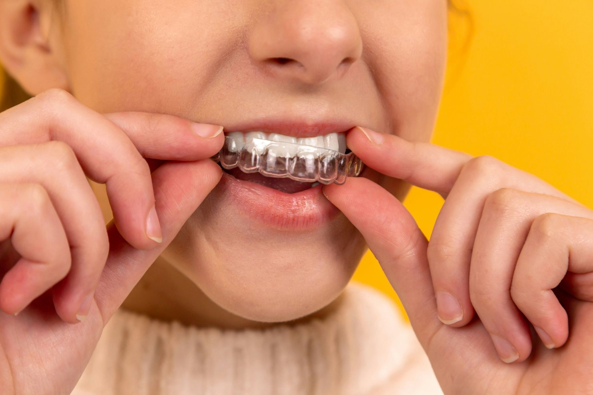
目立ちにくい
装置
表側の装置には、透明なブラケットを使用しています。歯の裏側につける装置は、会話中や笑顔のときでも見えにくいのが特徴です。マウスピース型は透明で、取り外しもできます。
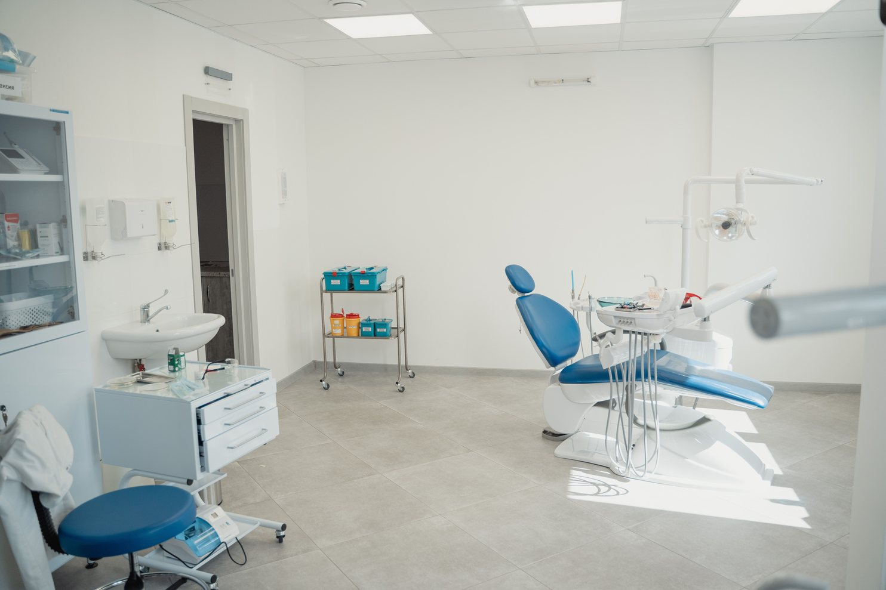
治療中と保定期間中の
定期的なチェック
治療中は、通院のたびに歯が計画どおりに動いているか確認します。装置を外したあとの保定期間中も、3〜6か月に1度の通院で、歯並びに変化がないか確認します。
PRICE費用と期間
矯正治療は、原則として自由診療になります。金額はすべて税込です。公的医療保険の対象となるのは、次のいずれかに当てはまる場合です。
- 厚生労働大臣が定める疾患に起因した咬合異常
- 前歯及び小臼歯の永久歯のうち3歯以上の萌出不全に起因した咬合異常（埋伏歯開窓術を必要とするものに限る）
- 連続した3歯以上の先天性欠如歯に起因した咬合異常（18歳未満に限る）
- 顎変形症（顎離断等の手術を必要とするものに限る）
保険が適用される矯正治療を行えるのは、地方厚生（支）局長に届け出た保険医療機関に限られます。当院はこの届出をしていません。保険の対象になる場合は初診相談でお伝えし、届出をした医療機関をご紹介します。
全体矯正（表側）
歯の表面に小さな装置（ブラケット）とワイヤーをつけます
装置代
770,000円
- 期間
- 1年10か月〜2年9か月
- 通院
- 4週に1回・24〜36回
総額の目安998,800〜1,064,800円
全体矯正（裏側）
歯の裏側につけるため、装置が正面から見えにくくなります
装置代
1,100,000円
- 期間
- 1年10か月〜2年9か月
- 通院
- 4週に1回・24〜36回
総額の目安1,328,800〜1,394,800円
マウスピース型（全体）
取り外せる透明な装置です（薬機法の承認を受けていません）
装置代
660,000円
- 期間
- 1年5か月〜3年1か月
- 通院
- 6〜8週に1回・12〜20回
総額の目安822,800〜866,800円
部分矯正（前歯）
一部の歯だけを整える治療方法です（適応かどうかは精密検査で判断します）
装置代
330,000円
- 期間
- 6か月〜1年1か月
- 通院
- 4週に1回・6〜14回
総額の目安459,800〜503,800円
装置代以外の費用
| 初診相談 | 3,300円／60分。口腔内の確認と写真の撮影を行います。 |
|---|---|
| 精密検査・診断 | 44,000円／1回。パノラマX線写真・セファロ・口腔内写真の撮影と歯列のスキャンを行い、治療計画をご説明します。 |
| 調整料 | 5,500円／1回。装置をつけている間、通院のたびにいただきます。 |
| 保定装置 | 33,000円／上下1組。装置を外したあとの後戻りを防ぐために装着していただきます。 |
| 保定中の通院 | 3,300円／1回。通院の間隔は3〜6か月です。 |
総額の目安は、初診相談から保定中の通院までにかかる費用の合計で、保定中の通院5回分を含みます。保定中の通院の回数は、経過によって変わります。抜歯を行う場合は、連携先の歯科医院での費用が別途かかります。1本あたり5,500円から11,000円が目安です。
初診相談の費用はご相談の当日に、精密検査の費用は検査の当日にいただきます。装置代と保定装置の費用はそれぞれの装置をつける日にいただきます。調整料と保定中の通院の費用は、ご来院のたびにいただきます。現金・クレジットカード・デンタルローンをご利用いただけます。
期間と通院回数は、2023年から2025年に当院で治療を終えた112名（表側と裏側64名／マウスピース型31名／部分矯正17名）の実績に基づく範囲です。8割の方が、この範囲で治療を終えました。治療の効果には個人差があります。記載の期間や回数を保証するものではありません。
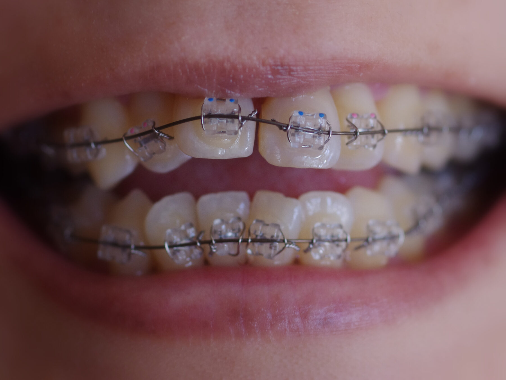
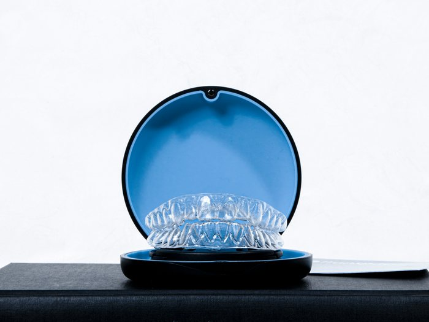
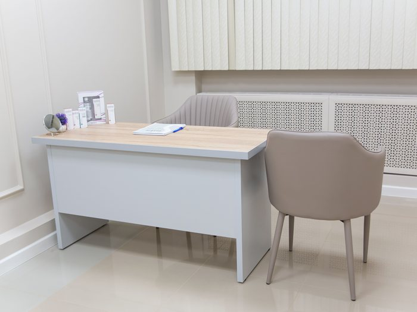
GREETING院長あいさつ
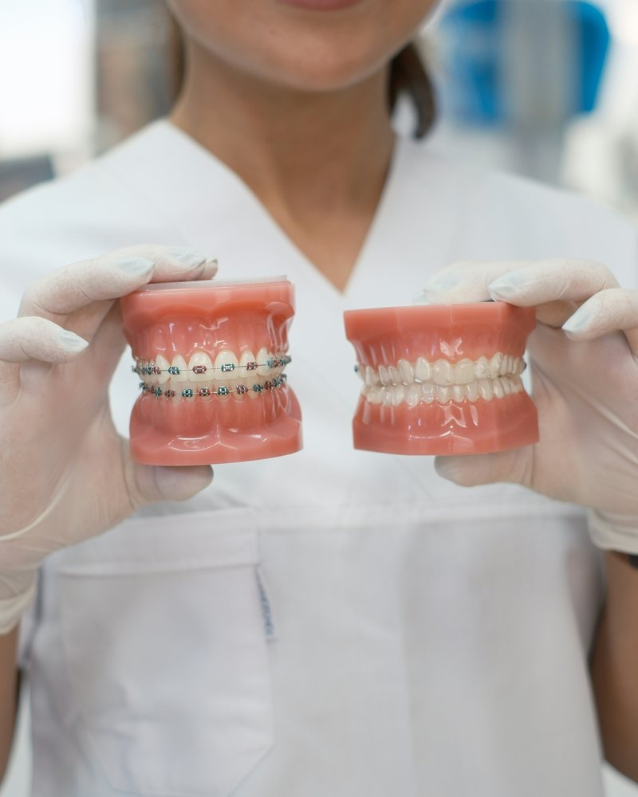
はじめまして。
院長の三好文恵です。
並木町矯正歯科は2019年に開院しました。
治療が進むにつれて、歯の位置は少しずつ変わっていきます。その変化を患者さんと一緒に確かめる時間を、この仕事でいちばん大切にしています。
何年かあとに「始めてよかった」と思っていただけるよう、保定期間中も、通院のたびに歯の動きを記録し、装置を外したときの記録と見比べています。
院長三好 文恵
- 2008年3月
- ○○大学歯学部を卒業
- 2009年3月
- ○○大学病院で歯科医師臨床研修を修了
- 2009年4月
- ○○大学病院の矯正歯科に入局
- 2014年4月
- 広島市内の歯科医院に勤務
- 2019年5月
- 並木町矯正歯科を開院
- 2024年4月
- 日本歯科専門医機構認定 矯正歯科専門医の資格を取得
FIRST VISIT初診相談の流れ
- STEP1
カウンセリング
気になっているところとご希望を伺います。お悩みは遠慮なくお聞かせください。
- STEP2
口腔内の確認と写真の撮影
いまの歯並びを、正面と側面から撮影します。セファロの撮影は精密検査の日に行います。
- STEP3
治療方法のご説明
確認した歯並びをもとに、考えられる治療方法をご説明します。使用する装置は、精密検査の結果を見てから、ご相談のうえお選びいただけます。
- STEP4
お見積りの書面をお渡し
ご相談の当日に書面をお渡しします。抜歯を行う場合にかかる費用の目安も、あわせて記載します。
- STEP5
ご自宅でのご検討
ご自宅でご家族とご相談のうえ、ゆっくりご検討ください。治療を始めるときは、お電話またはWEBから精密検査のご予約をお取りください。
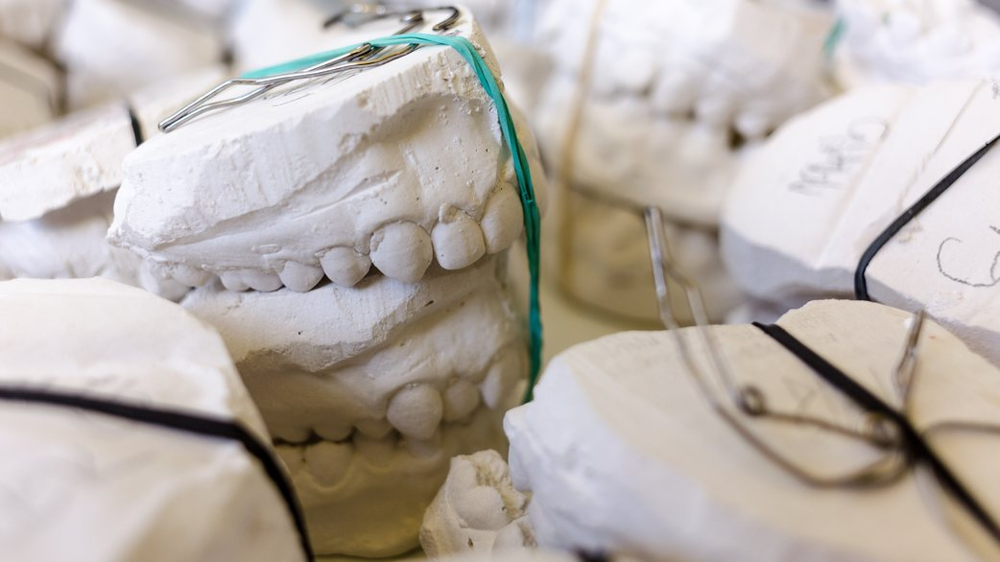
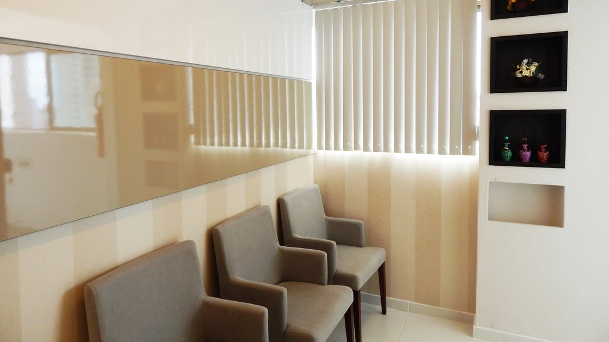
RISK矯正治療のリスクと副作用
治療中のリスクと副作用
- 痛みと違和感
歯が動く際の痛みや、装置が当たる違和感が出ることがあります。痛み止めをご希望の方には院内でお渡しします。
- 虫歯と歯周病
治療中は、装置がついているため歯が磨きにくくなります。虫歯や歯周病のリスクが高まります。
- 噛みにくさと話しにくさ
装置に慣れるまでの間、食事や会話がしづらくなることがあります。とくに裏側の装置は、表側より発音に影響が出やすくなります。
- 金属アレルギー
治療中に金属アレルギーの症状が出る場合があります。
- 誤飲
歯に接着して使う装置は、部品が外れてしまうことがあります。外れた部品を誤飲する可能性があります。
- 計画どおりに進まないこと
歯の動きによっては、治療計画どおりの結果が得られないことがあります。装置の使用状況や通院の間隔によっては、当初の見込みより治療期間が長くなることがあります。
歯・歯ぐき・顎に関するリスク
- 歯根吸収
歯を動かす力で、歯の根が短くなる場合があります。
- 歯肉退縮
歯ぐきがやせて下がることがあります。歯と歯の間に三角形の隙間（ブラックトライアングル）ができる場合があります。
- 歯髄壊死
ごくまれに、歯の神経が障害を受けて壊死する場合があります。
- 骨性癒着
ごくまれに、歯と骨が癒着していることがあります。癒着した歯は動かすことができません。
- 顎関節の症状
治療中に顎関節の音や痛みが出ることがあります。
- 歯やかぶせ物の損傷
装置を外すときに、歯の表面に小さな亀裂が入る場合があります。かぶせ物の一部が破損する可能性があります。
治療後のリスク
- 後戻り
保定装置を使わないと、歯並びが後戻りすることがあります。保定期間は2年程度が目安です。
- 親知らずと顎の成長
治療後に親知らずが生えてくると、歯並びや噛み合わせが変化することがあります。顎の成長が残っている方は、成長に伴って噛み合わせが変わる場合があります。
- 元に戻せないこと
歯を動かし、場合によっては抜歯も行うため、治療前の状態に戻すことはできません。
マウスピース型の装置について
- 未承認の医療機器であること
当院で使うマウスピース型の矯正装置は、医薬品医療機器等法（薬機法）の承認を受けていない医療機器です。
- 入手の経路
国外の製造元の製品を、当院の歯科医師が個人輸入の手続き（輸入確認証の取得）で取り寄せています。個人輸入の注意点は、厚生労働省のページ「個人輸入において注意すべき医薬品等について」に掲載されています。
- 国内の承認品
国内にも、マウスピース型の矯正装置として薬機法の承認を受けているものがあります（独立行政法人医薬品医療機器総合機構のウェブサイトで2026年8月に確認）。ご希望があれば、その装置での費用と期間もお伝えします。
- 国外での承認と安全性
製造元が公表する添付文書と安全性情報（2026年8月確認）によると、欧州では2018年3月にCEマークを取得し、米国では2019年6月に医療機器として販売が認められています。添付文書には、重大な副作用として装置の誤飲と材料に対する過敏症が挙げられています。国外で報告された主な副作用は、歯ぐきの痛みと口内炎です。
- 救済制度の対象外
この装置による健康被害は、医薬品副作用被害救済制度と生物由来製品感染等被害救済制度（公的な給付を受けられる制度）の対象になりません。
FAQよくある質問
矯正治療は何歳まで可能ですか？
矯正治療に年齢制限はありません。2023年から2025年に当院で治療を終えた112名のうち、40歳以上の方は29名です。歯ぐきと歯を支える骨の状態を精密検査で確認したうえで、治療方法をご提案します。
治療を中止した場合、費用はどうなりますか？
装置をつける前であれば、初診相談と精密検査の費用だけをいただきます。装置をつけたあとに中止する場合は、お支払いいただいた装置代を治療の進行状態に応じて精算し、まだ行っていない分の費用をお返しします。精算の方法は、初診相談でお渡しする書面に記載しています。
治療中に引っ越すことになったら、治療は続けられますか？
転居先の矯正歯科をご紹介します。紹介状とこれまでの検査の記録をお送りし、転居先の医院で治療を続けられるよう手続きを行います。装置代は、中止の場合と同じ方法で精算します。
抜歯はどのような基準で判断しますか？
歯を並べるスペースが顎に足りない場合に、抜歯をご提案することがあります。精密検査で歯の大きさと顎の幅を測ってから決めます。2023年から2025年に治療を終えた112名のうち、抜歯をした方は38名です。
矯正の費用は、医療費控除の対象になりますか？
年齢や目的からみて必要と認められる矯正の費用は、医療費控除の対象となります。見た目を整えることが目的の場合は対象になりません。デンタルローンでお支払いの場合は、信販会社が立替払をした金額が、その立替払をした年の医療費控除の対象になります。金利と手数料は含まれません（国税庁タックスアンサーNo.1128、2026年4月1日現在の法令による）。控除の対象になるかどうかは、所轄の税務署にご確認ください。
分割払いはできますか？
提携している信販会社のデンタルローンで、最大60回の分割払いをご利用いただけます。実質年率は4.5%で、ローンの審査があります。たとえば表側の装置代770,000円を60回でお支払いの場合、月々14,356円、支払総額は861,360円（うち手数料91,360円）です。手数料の計算方法と遅延損害金の率は、信販会社の契約書面に記載されています。
矯正中の食事に制限はありますか？
表側と裏側の装置が歯についている間は、硬いもの（せんべい等の硬いお菓子、ナッツ類）や装置にからみやすいもの（キャラメル、ガム等）は、できるだけ避けてください。マウスピース型の場合は、食事のときに外し、歯を磨いてからつけ直してください。
装置が外れたときはどうしたらいいですか？
診療時間内にお電話ください。状況を確認して、ご来院の日時をご案内します。痛みが強い場合は急患としてその日のうちに診察します。外れた部品は、ご来院の際にお持ちください。
ACCESSアクセス
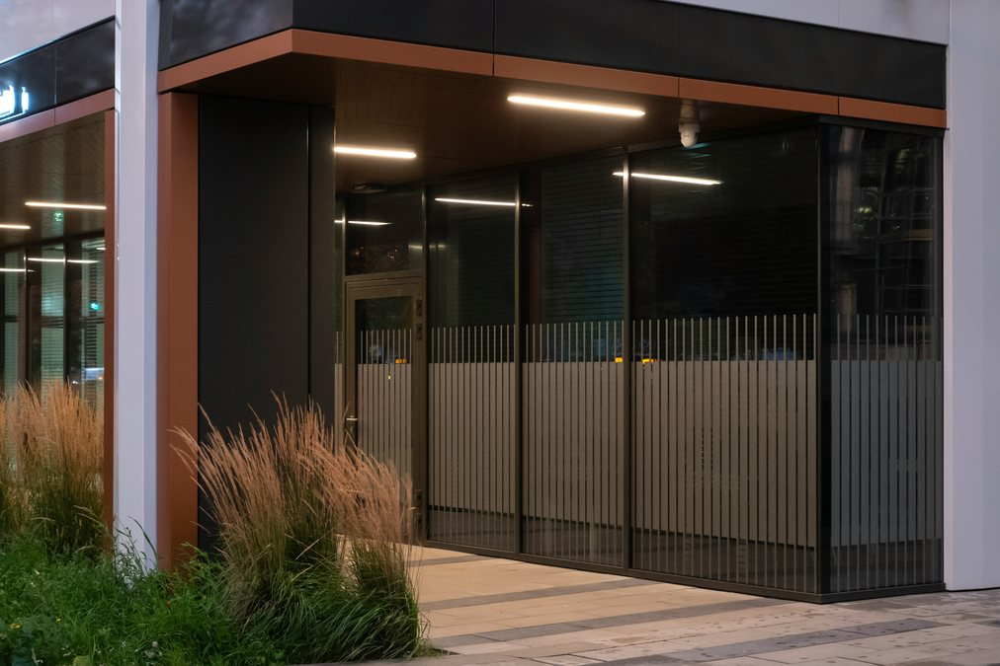
- 所在地
- 広島市中区○○町0-0-0 ○○ビル1階（架空の住所です）
- 電車
- 広島電鉄・袋町電停から徒歩6分です。当院の向かいは青い看板の薬局です。
- 駐車場
- 提携の「○○パーキング」をご利用いただいた場合、1時間の無料サービス券をお渡しします。
- 設備
- 診療台3台・パノラマ・セファロの撮影装置・口腔内スキャナー
- お電話
- 082-000-0000（診療時間内）